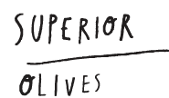
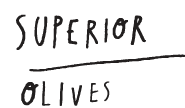
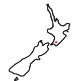

Start The
Dali Journey
back
Start The
Dali Journey
back
Kia ora. Welcome to great oil created from local living olives...
And great olives...
From thriving earth, Dali leads in crafting olives for flavour and health. Living olives and oil powered by phenols, nature’s antioxidants. The healthiest oil tastes the best. And in Martinborough we produce some of the finest in Aotearoa and the world - essential to taste.
“...a triumph... divine... sublime... best I’ve tasted…bloody fantastic...” – customers
“...well balanced, harmonious, complex...” – international olive oil judges
Extra Virgin Olive Oil (EVOO) is proven goodness – cold-milled, first extraction, no additives, infusions or impurities. EVOO demands highest standards in grove management, pressing and storage – and a certificate of approval. See the red sticker on each bottle.
Dali goes one step further. Our EVOO contains high levels of phenols, nature’s antioxidants. The higher the phenolic content the more health benefits. Dali was the first olive oil in New Zealand to label phenol content, so you know the benefits we bring to you.
Dali transfers superior Estate management, care and nature directly to the bottle. That’s why we call Dali Super Premium Extra Virgin Olive Oil.

Dali expresses global influences – olive varieties transported to New Zealand, the last country to be settled. Local influences provide added benefits – flavours translated by local terroir and sustainable grove management.
To order, join our mailing list or to provide feedback, please email:
Please read the Blogs for latest Dali news, recipes and tips on ways to use great olive oil and olives. Thank you for your time.
Dali.
Essential to Taste.
Direct payments to The Vintiner’s Grove Limited, pay details provided
When making a payment please quote the reference number given for your confirmed order, provided to you on the confirmation email.
On payment, a receipt will be issued with the dispatch, along with our complimentary recipe.
Please sign for courier orders if you can.
At present we do not ship outside New Zealand.
